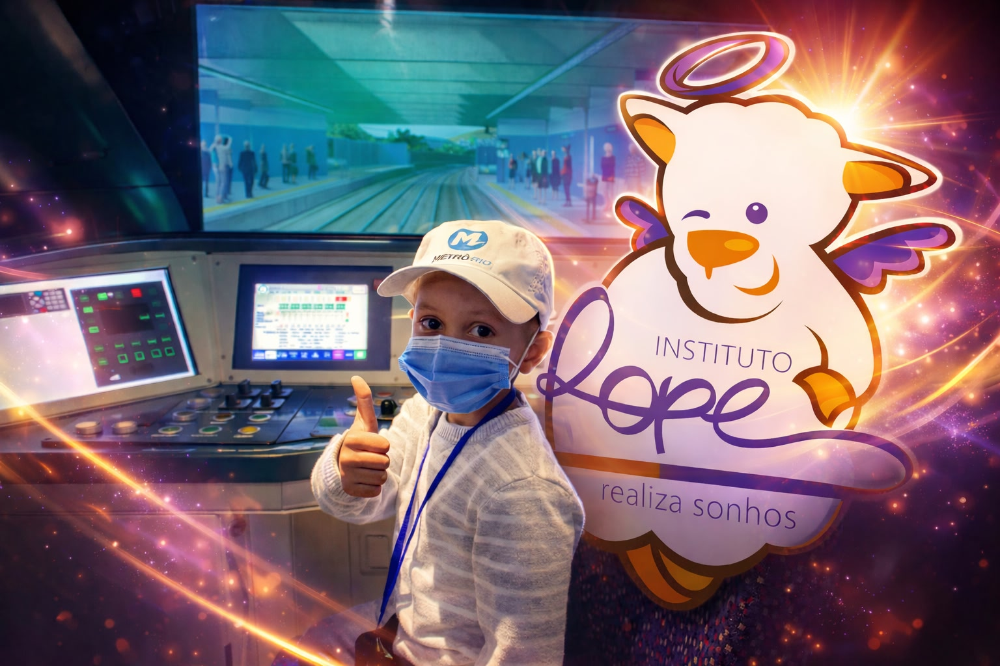

Projeto de Tecnologia com Impacto Social
DreamCare Management System
Sistema desenvolvido para automatizar a gestão de sonhos realizados pelo Instituto Rope, integrando dados, banco PostgreSQL, API REST e interface web.

Impacto em tempo real
Sobre o projeto
O DreamCare foi criado para organizar, consultar e analisar informações sobre sonhos realizados, transformando planilhas em dados estruturados e acessíveis para tomada de decisão.
Arquitetura
Google Drive
ETL
PostgreSQL
FastAPI
Landing Page
Tecnologias utilizadas
Python
FastAPI
PostgreSQL
Pandas
Tkinter
HTML
CSS
JavaScript